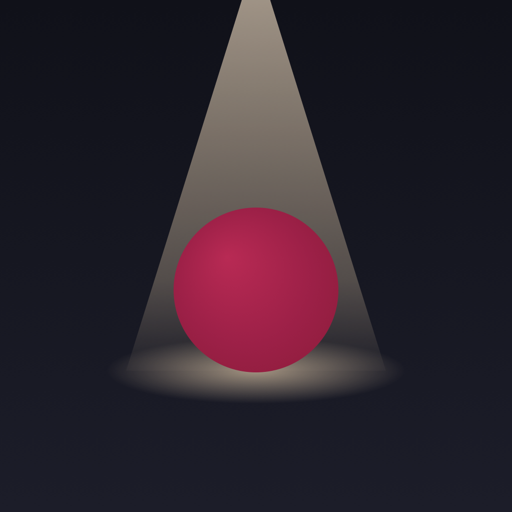

SpotSpot es una app independiente creada en Francia. Responsable del tratamiento y editora: Selma Attie, Francia. Contacto: app.support.spot@gmail.com. Alojamiento de la web: GitHub, Inc., 88 Colin P. Kelly Jr. Street, San Francisco, CA 94107, EE. UU.
Spot guarda todo en tu teléfono: tu ciudad, tus guardados, los espacios que sigues, tus gustos. Tu ubicación se usa solo en el teléfono, para mostrar lo que hay cerca, y nunca se nos envía.
Si inicias sesión con Apple, guardamos en iCloud de Apple: tu nombre, @usuario, foto opcional, bio y ciudad; a quién sigues y quién te sigue; y, si lo permites, lo que guardas.
Para que funcionen la cuenta y los seguimientos que pediste. Nada se usa para publicidad, se vende ni se comparte. Spot no tiene anuncios ni rastreo.
Hasta que borres tu cuenta. «Eliminar mi cuenta» en la app lo borra todo al instante.
Puedes ver y exportar tus datos, corregirlos, borrarlos, oponerte o reclamar ante la CNIL (cnil.fr).
Hay que tener 15 años o más para crear una cuenta.
Los datos de cuenta los guarda Apple (iCloud) según sus condiciones. Los programas no contienen datos personales. Para mostrarlos con sus fotos, tu teléfono se conecta a GitHub Pages (EE. UU.) y a webs de espacios e imágenes, que pueden ver tu dirección IP como cualquier web. Apple y GitHub pueden tratar datos fuera de la UE con sus propias garantías.